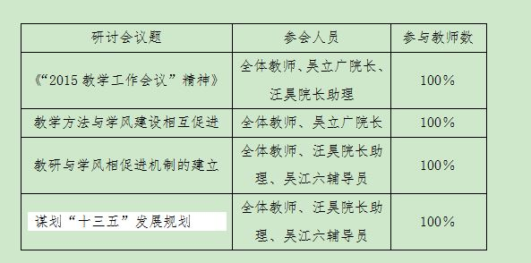
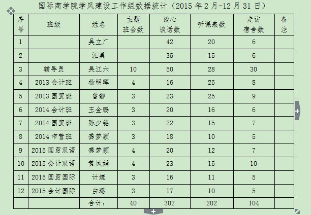

根据我校2015年学风建设方案与要求，结合我院实际情况，坚持全员参与、全过程指导、全方位管理，不断深化学风建设，努力培育我院优良学风，为我校争创“知名独立学院”而努力奋斗！
一、以教风引领学风建设。
我院突出专业教师的引领作用，以强化教风建设为抓手，发挥理论课教师对学生具有强大学习影响的拉力作用，从教风和教学方面助力我院的学风建设。
（一）举办学习辅导班，引导学生学习，提高学习主动性。
根据我院部分学生专业和英语基础薄弱等情况，学院特开设语言、专业学习辅导班帮助学生对知识的学习。2015年开设双语课程《财务会计原理》以及托马斯大学外教全英授课的《金融学原理》等10次辅导班。
（三）建立助教帮扶制度，帮助学生答疑解惑。
我院选派曾静、龚梦颖、白璐等专业课老师作为全英外教课程的助教，加强学生与外教的沟通与交流，为学生答疑解惑。具体如下：

（四）召开教风座谈会，加强教风的内拉力。
2015年，我院针对学风建设召开了4次教风座谈会，以加强教风对学风的内拉力作用。具体如下：

二、以管理推动学风建设。
（一）建立学风建设工作组，统筹落实学风建设。
我院建立了以吴立广院长为组长，汪昊院长助理为副组长以及全体辅导员、班主任、学生干部为成员的学风建设工作小组，全面统筹落实学风建设，切实组织安排好纪律检查、听课、走访宿舍、谈话谈心等各项学风工作，做到有布置、有落实、有检查、有反馈。

（二）完善制度，巩固学风建设成果。
我院继续健全完善了学风建设的制度，切实巩固学风建设的成果。如：
1.《国际商学院学风建设领导工作组听课制度》
2.《国际商学院教师教学意见反馈制度》
3.《国际商学院家长联系制度》
4.《国际商学院学生干部考核制度》
5.《国际商学院2015年学风建设实施方案》
6.《华南理工大学广州学院国际学生管理办法》
7.《华南理工大学广州学院出国留学生管理办法》
（三）严抓纪律检查，落实学风建设。
我院学风建设工作组，以领导抽查、班主任督查、团委学生会突查、年级交叉检查等方式，严格执行学风纪律检查，每周通报结果，并对违规的班级及学生进行诫勉谈话，情节较为严重的进行批评教育，认真落实好学风建设。在学风建设期间，各班上课平均出勤率达到了92%以上，迟到率9%以下，学生违纪违规现象明显减少，整体学风建设卓有成效。
（四）落实“五制两工程”，助推学风建设。
“五制两工程”是学校学风建设的重要举措，包括：学院领导听课制、教师意见反馈制、家校联系制、学生干部联系制、学生干部考核制、考证工程和考研工程。对此，我院高度重视，认真落实。
1、我院吴立广院长、汪昊院长助理每周至少到课堂随堂听课1次，既考察学生情况，也对教师进行评课，实现教风和学风齐抓共管。
2、关于任课教师反馈的意见，如：学生迟到、早退等出勤问题，我院都会认真对待，并对违纪学生进行诫勉谈话和批评教育，有效遏制学风下滑的趋势。
3、建立家校联系机制，如：学生的请假、学习情况、心理状态等，辅导员吴江六老师和各班班主任都会通过电话、邮件等方式与学生家长联系，基本做到平均每学期至少与30%的学生家长联系一次。
4、完善学生干部联系及考核制度。我院制度了《学生干部联系制度及考核制度》，通过定期召开团支部书记会议、班干部会议、约谈学生、规范干部考核等方式，充分发挥其在学风建设中的先锋模范带头作用。据统计：每两周至少一次团支部会议与班干部会议、学生干部已约谈了班级学生220多人次。
5、积极推动考证与考研工程。我院根据国际化商科人才的培养目标，积极引导、帮助、推动学生考试与考研工程，效果显著。据统计：我院人均考证率达78%；另外，我院重视考研的引导，2015年，2011级的毕业生中有1名毕生考取加拿大国家的研究生。据了解，我院有读研意向的学生达25%以上，有效地推动了我院的学风建设。
（五）搭建文化育人平台，全面促进学风建设。
1、举办国际讲坛，培育国际英才。我院继续开展“国际讲坛”文化育人活动，以提升学生的专业素质和掌握学科发展的前沿动态为宗旨，如：暨南大学刘德学教授作题为“广东自贸区建设与粤港澳服务业融合发展”等第五讲，听讲师生160多人。
2、开口Show英语，营造语言环境。为了提高我院学生的英语水平，我院举办了第二届英文歌、英语辩论赛、英语主题演讲等强化英语水平的活动，累计参与学生达320多人次，这种寓学于乐的形来激发了学生学习英文的热情，也是学生展示自我，锻炼自我的机会。
3、开展专业实习实践和社会实践活动，发挥实践育人作用。我院积极开展各项专业实习实践和社会实践活动，充分发挥实践育人的作用。2015年，我院组织了荷兰交流生、2015级印尼留学生、2014级学生（包括印尼留学生）等123学生到企业普华灵动、佛山乐从家具批发市场、广州市南沙自由贸易区、丰田汽车公司、广东省博物馆等珠三角地区进行实地参观考察活动，让学生真实地体验珠三角的经济发展情况和深厚的历史文化。2015年，我院志愿者服务队积极开展社区服务、关爱老人儿童等公益志愿活动，累计服务500多小时。2015年，我院173名学生积极参加暑期社会实践活动，涉及3个省、12个地级市、20多个县区，完成报告158份，完成率90%，实践行业涉及会计事务所、建筑、食品、服装等企业。我院荣获了2015年暑期三下乡社会实践“重点团队”称号，吴江六被评为2015年暑期三下乡社会实践”优秀指导老师”称号。
4、抓好宿舍阵地，培育寝室文化。我院一直努力营造良好的寝室文化，逐渐形成了文明、健康、好学的宿舍文化。例如：english home(英语宿舍)，即固定一个时间只能用英语交流；一家人宿舍，即：宿舍同学像一家人一样，一起成长、互相鼓励、互相监督等。这种具有浓厚学习氛围的寝室，有力地促进了我院的学风建设。
5、活力文体，快乐学习。为促进我院良好学风的形成，我院举行了一系列的学生喜闻乐见的文体活动，如：“三人”篮球赛、晨跑“三走”运动、新生迎新晚会等，参与人数达700多人次，使学生在这些活力文体活动中，锻炼了身体，愉悦了心情，发挥了特长，体现了当代大学生的良好精神面貌！
三、以成果检验学风建设。
我院按照学校2015年学风建设的精神和安排，经过教风在前的引领和管理从后推动的战略，一牵一推，两手都抓，两手都硬，以喜人的成效检验着我院的学风建设。
（一）学生学习满意度较高。
学院采用问卷调查形式对2013、2014级，180名学生进行学生学习满意度的调查，调查问卷主要包括学生对专业设置、课程设置、图书馆藏书、学生活动等。调查结果表明，91%的同学表示满意，其中：16%表示非常满意，44%表示满意，31%表示一般满意。
（二）学生学习成绩优异：2014-2015年度，学生取得一些荣誉，如：
郭研获学校百名学生标兵之“十大先进宣传标兵”荣誉称号，实现我院“零”的突破。
马宁、谭颖烨、陈雪妮荣获学校党课学员讲坛"二等奖”荣誉称号，取得很大的进步。
魏晓蕊、彭卓欣获学校“优秀三好学生”荣誉称号。
郭研、黄翊恩获学校“优秀学生干部”荣誉称号。
魏晓蕊获新宝宝企业奖学金。
获学校第十届心理知识竞赛团体三等奖荣誉称号。
获全国大学生英语竞赛初赛“全国一等奖”2人：龙嘉琳、雷嘉明。
获第十届校运会“道德风尚奖”的称号。
调研团队获2015年暑期社会实践“优秀重点团队”称号。
学风建设是一项系统而长期的工程，只有进行式、没有完成式；为此，我院继续深化学风建设，切实培育我院优良的学风！
国际商学院